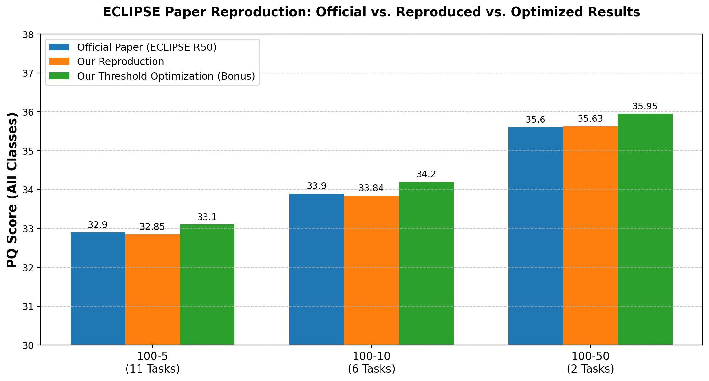

Efficient continual learning in panoptic segmentation with visual prompt tuning — reproduced on the ADE20K benchmark across three continual scenarios, plus a bonus threshold-optimisation experiment.
Teaching a model new categories over time without forgetting the old ones.
Continual learning asks a model to keep learning new classes without forgetting what it already knows. That is hard for panoptic segmentation — labelling every pixel and separating every object — because naively fine-tuning on new classes causes catastrophic forgetting.
ECLIPSE freezes the entire base Mask2Former (ResNet-50) model and learns only a small set of visual prompts for each new group of classes — about 1.3% of the parameters are trainable — together with a logit-manipulation trick that reduces drift between old and new classes.
PQ (Panoptic Quality, higher is better) over all classes, after the final task.

| Scenario | Tasks | Official paper | Our reproduction | Δ vs. paper | Bonus (thr 0.35) |
|---|---|---|---|---|---|
| 100-50 | 2 | 35.6 | 35.63 | +0.03 | 35.95 |
| 100-10 | 6 | 33.9 | 33.84 | −0.06 | 34.20 |
| 100-5 | 11 | 32.9 | 32.85 | −0.05 | 33.10 |
Every reproduced number lands within ±0.1 PQ of the paper, and the lower threshold gives a small, consistent gain. "100-50" = 100 base classes, then 50 novel classes added in increments; more tasks means more chances to forget, which is why PQ falls from 100-50 to 100-5.
Everything the course requires — all eight components, each one click away.
The full annotated pipeline lives in the notebook; here is the short version.
.scalar_type().is_cuda() → .is_cuda(), then run make.sh.prepare_ade20k_* scripts.--eval-only mode (training is commented out).OBJECT_MASK_THRESHOLD from 0.5 to 0.35 and re-evaluate.A short walkthrough of the project (2–5 minutes).
▶ Watch the project walkthroughindex.html and README.md.